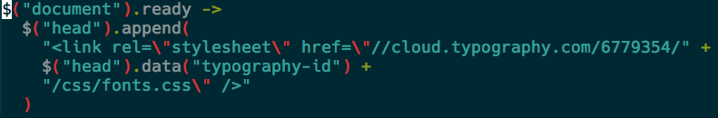

Case Study: Cloud Typography blocking the CSSOM
Hannah OppenheimerDeveloper, Designer, at Epion Health
@opihana on the internets
What is she talking about?
- Our biggest unknown problem @ Epion: wifi
- How we troubleshot that
- Cloudtypography was the culprit!
- But why?
- Now what?

Wifi issues with Epion's customers
Wifi issues with Epion's customers
- Infinite spinners
- Slow wifi, no IT departments
- First solution: set a timeout to have requests retry after 20 seconds. If that fails, then trigger an error.
- Helped a lot! But, still, reports of "spinning iPads"
How did we troubleshoot this?
- Replicate this! Using a proxy, intercept requests
- We used Charles Proxy, because look at this logo:
- We found that the only way to replicate the infinite spin was to place the intercept at cloud.typography.com.
Not cool, Cloud Typography
- On slow wifi, the request gets stuck on Cloud Typography
- But the page should still load, right??
- Wrong, the CSS Object Model can't be constructed right now, sorry.
What da heck is CSSOM?
- When a browser requests a page, it first parses the HTML and constrcuts the CSSOM **before** the first paint occurs.
- As soon as that's all good, the page can render a full view.

What da heck is CSSOM?
- That's why when you have JS inline, it halts the page load. That's why CSS is in the head and JS is in the footer.
- So, Cloud Typography was super smart, and they load fonts through CSS. It should get rendered first, because we don't want the page to load without the fonts
- Right??
Well, kinda.
- Cloud typography requires a stylesheet link in the head. This link directs to Cloud Typography's servers, and then redirects right back to your public fonts folders. This is to authenticate your Cloud typography account to ensure you're not a font snatcher.
- DNS lookup, TCP connection, file download, on every page load
- Fonts will always load on the page, no flickering, and they do so really fast!
- Worst case scenario with Cloud Typography: your page never actually loads.
What now?
- Cloud Typography should just link to fonts and stop charging us arms and legs
- Redirect should be browser cached
- (TBD) If you don't need the browser support that Cloud Typography adds, just link to your public fonts folder
- Load it through js like everyone else:

@tollmanz